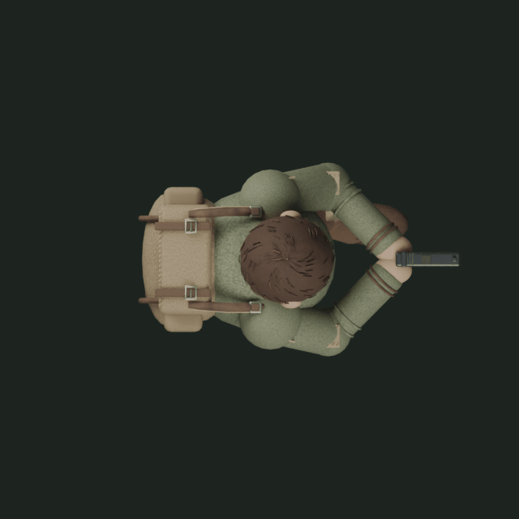
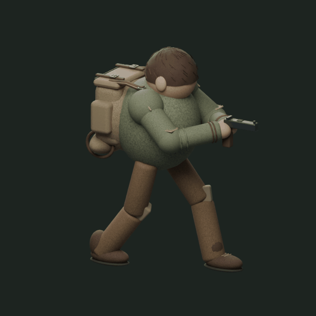

Comparar com o personagem de referência

Jaqueta oliva, mochila de lona, correias de couro, remendos e botas marrons. Mesmo movimento aprovado, agora com o visual do personagem.
Ciclo completo


Arquivo Blender editável · Prancha das poses · Boneco aprovado anterior
Primeira adaptação 3D da arte. O acabamento é simplificado; não é uma reprodução idêntica da pintura. Prévia independente, sem integração à Unity.